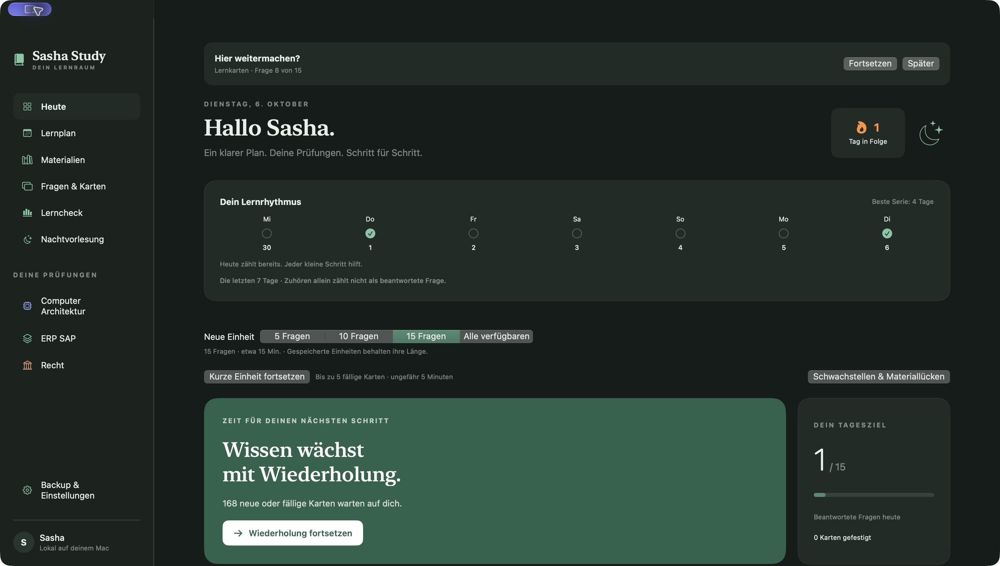
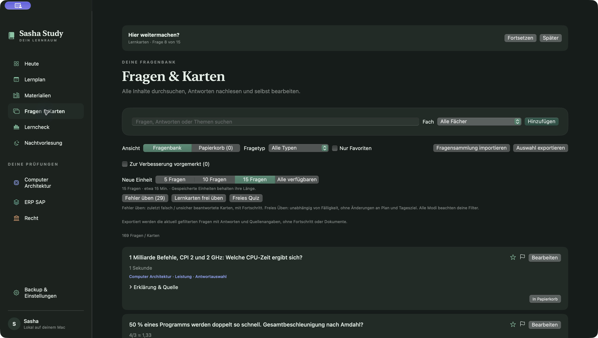
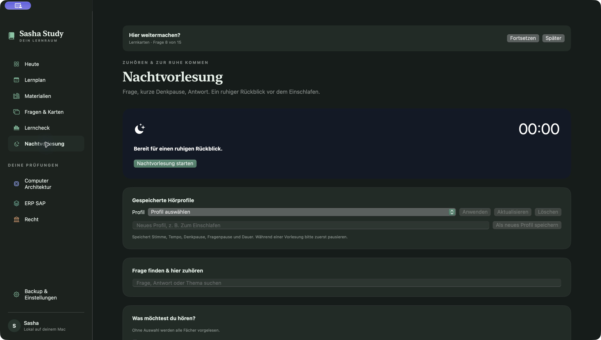

Remember what you learn
Review flashcards with spaced repetition, practise mistakes and test yourself with quizzes.
A little structure. More room to learn.
Bring your materials, flashcards and exam plans together. Sasha Study helps you turn a big subject into a manageable daily routine.
Explore the appBuilt for Mac · iPhone & iPad preview

From scattered notes to a daily rhythm
A personal study project, built around the way a student actually prepares for exams.
Review flashcards with spaced repetition, practise mistakes and test yourself with quizzes.
Keep exam dates, tasks and notes together. Use the focus timer and timed mock exams to prepare.
Import documents, search their extracted text and connect questions to the material they came from.
Nachtvorlesung reads questions and answers aloud with adjustable pauses, speed and duration.
A closer look

Browse your questions, read explanations and practise what needs attention.
Open full-size screenshot
A quieter way to review, with adjustable voice, pace and thinking pauses.
Open full-size screenshotYour learning belongs to you
Progress and study materials stay local by default. No advertising. No analytics. Export a backup when you need one.
Backups include study data and extracted text. Keep a separate copy of your original imported files.
Native on Apple platforms
The Mac version includes the material library, study tools, spoken lectures, reminders and a widget. Requires macOS 14 or newer.
The mobile preview brings daily sessions, exams, materials and spoken lectures to iPhone and iPad. Requires iOS or iPadOS 17 or newer.
A personal project in active development. A public download is not available here yet; the mobile app is a preview.
No. Import extracts searchable text. You can create questions yourself and link them to your materials.
Not in the current distributed preview. Data stays local; automatic cross-device sync is not enabled.
Included material covers Computer Architecture, ERP/SAP and Law. You can also add your own questions, materials and exams.
Sasha Study began as a way to prepare for university exams and grew into a native study app. See the other projects behind it.
Back to portfolio